1. Erste Schritte
Stapik Calendar ist ein Desktop-Kalender. Er zeigt jeweils einen Monat an, und jeder Tag kann beliebig viele Einträge enthalten. Ein Eintrag hat einen Namen, einen optionalen Weblink und eine optionale Farbe.
Alles, was Sie tun, wird automatisch auf Ihrem Computer gespeichert. Wenn Sie einen eigenen Stapik-Cloud-Server haben, kann der Kalender außerdem zwischen allen Ihren Geräten synchronisiert werden (siehe Synchronisierung mit Stapik Cloud).
Ein kurzer Einstieg:
- Starten Sie die Anwendung über Ihr Anwendungsmenü (Stapik Calendar). Sie öffnet sich im aktuellen Monat.
- Doppelklicken Sie auf eine leere Stelle eines beliebigen Tages.
- Geben Sie einen Namen ein und klicken Sie auf OK. Der Eintrag erscheint an diesem Tag.
- Klicken Sie mit der rechten Maustaste auf den Eintrag, um ihm eine Farbe zu geben, ziehen Sie ihn auf einen anderen Tag, um ihn zu verschieben, oder klicken Sie auf ✕, um ihn zu löschen.
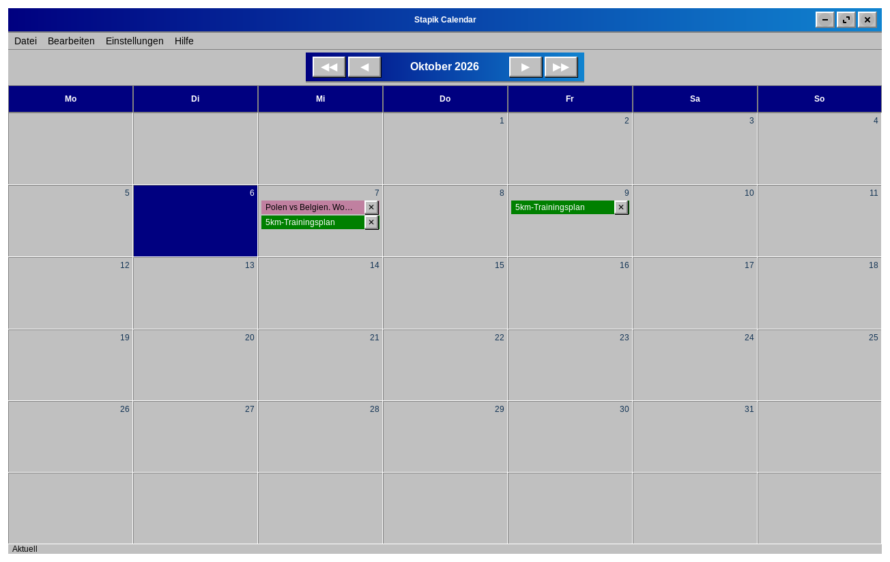
2. Das Hauptfenster
Das Fenster besteht von oben nach unten aus:
- Menüleiste — Datei, Bearbeiten, Einstellungen und Hilfe (siehe Menüs).
- Navigationsleiste — der Name des angezeigten Monats und Jahres mit Schaltflächen zum Wechseln.
- Wochentagszeile — Montag bis Sonntag. Die Woche beginnt am Montag.
- Tageszellen — eine Zelle pro Tag. Die Tagesnummer steht in der Ecke der Zelle, der heutige Tag ist hervorgehoben. Zellen außerhalb des angezeigten Monats bleiben leer.
- Statusleiste — wird nur angezeigt, wenn der Kalender mit einer Cloud verbunden ist; sie zeigt den Synchronisierungsstatus (siehe Synchronisierung mit Stapik Cloud).
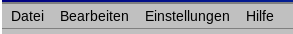
4. Einträge
4.1 Einen Eintrag hinzufügen
Doppelklicken Sie auf eine leere Stelle einer Tageszelle. Das Fenster Neuer Eintrag öffnet sich:
- Name — erforderlich. Ohne Namen wird der Eintrag nicht angelegt.
- Link (optional) — eine Webadresse, die Sie später mit einem Klick öffnen können.
- Farbe — das erste, leere Quadrat bedeutet keine Farbe; die übrigen sind Farben (siehe Farben).
Bestätigen Sie mit OK oder wählen Sie Abbrechen, um zu verwerfen.
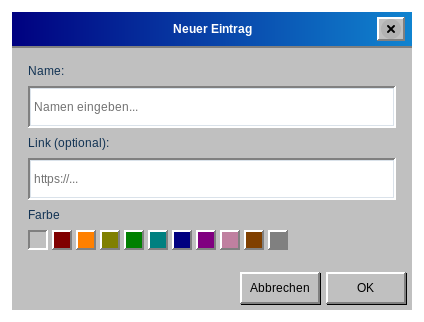
4.2 Schnell aus der Zwischenablage hinzufügen
Wenn Sie eine Webadresse kopiert haben (beginnend mit http:// oder https://), klicken Sie mit der rechten Maustaste auf einen Tag. Die Anwendung legt für diesen Tag einen Eintrag an, mit der Adresse als Link und dem Titel der Webseite als Name. Dafür ist eine Internetverbindung nötig; kann der Titel nicht gelesen werden, heißt der Eintrag Ohne Namen. Enthält die Zwischenablage keine Webadresse, passiert nichts.
4.3 Einen Link öffnen
Hat ein Eintrag einen Link, wird der Mauszeiger über seinem Namen zu einer Hand. Klicken Sie einmal auf den Eintrag, um den Link im Standardbrowser zu öffnen. Die Anwendung wartet einen Moment (die in Ihrem System eingestellte Doppelklickzeit), um sicherzugehen, dass Sie keinen Doppelklick meinten; die Seite öffnet sich daher mit kurzer Verzögerung.
http- und https-Links geöffnet. Ein Link ohne Schema, etwa example.com, wird als https://example.com geöffnet.4.4 Einen Eintrag bearbeiten
Doppelklicken Sie auf einen Eintrag, um das Fenster Eintrag bearbeiten zu öffnen, in dem Sie Name, Link und Farbe ändern können.
4.5 Einen Eintrag löschen
Klicken Sie auf die Schaltfläche ✕ am rechten Rand des Eintrags. Ein gelöschter Eintrag lässt sich mit Rückgängig zurückholen.
4.6 Farben
Klicken Sie mit der rechten Maustaste auf einen Eintrag, um eine Reihe von Quadraten zu öffnen, und klicken Sie auf die gewünschte Farbe. Die Farbe können Sie auch in den Fenstern Neuer Eintrag und Eintrag bearbeiten wählen. Verfügbare Farben: Rot, Orange, Gelb, Grün, Türkis, Blau, Lila, Rosa, Braun und Grau sowie das Standardaussehen ohne Farbe.
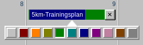
4.7 Verschieben und Kopieren
Ziehen Sie einen Eintrag und lassen Sie ihn auf einem anderen Tag los, um ihn zu verschieben. Halten Sie beim Ziehen Strg gedrückt, um ihn stattdessen zu kopieren. Wird ein Eintrag auf seinem eigenen Tag losgelassen, ändert sich nichts.
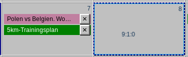
4.8 Tage mit vielen Einträgen
Hat ein Tag mehr Einträge, als in die Zelle passen, lässt sich die Zelle scrollen. Die Einträge erscheinen in der Reihenfolge, in der Sie sie hinzugefügt haben.
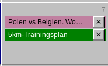
5. Rückgängig und Wiederholen
Hinzufügen, Bearbeiten (auch das Ändern der Farbe), Löschen, Verschieben und Kopieren von Einträgen lassen sich rückgängig machen. Verwenden Sie Bearbeiten → Rückgängig und Bearbeiten → Wiederholen oder die Tastenkürzel Strg+Z und Strg+Umschalt+Z.
Der Menüeintrag nennt die Aktion, zum Beispiel Rückgängig: Eintrag „Zahnarzt“ löschen, und ist ausgegraut, wenn es nichts rückgängig zu machen oder zu wiederholen gibt. Der Verlauf umfasst bis zu 100 Schritte. Er wird beim Schließen der Anwendung nicht gespeichert und geleert, wenn die Version aus der Cloud Ihren lokalen Kalender ersetzt (siehe Synchronisierung mit Stapik Cloud).
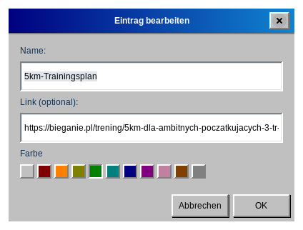
7. Tastenkürzel und Mausaktionen
Tastatur
| Tasten | Aktion |
|---|---|
| Strg+Z | Rückgängig |
| Strg+Umschalt+Z | Wiederholen |
| Strg+Q | Beenden |
| F1 | Diese Anleitung öffnen |
Maus
| Wo | Aktion | Ergebnis |
|---|---|---|
| Leere Stelle eines Tages | Doppelklick | neuer Eintrag |
| Leere Stelle eines Tages | Rechtsklick | schnelles Hinzufügen aus einer kopierten Webadresse |
| Eintrag | Klick | öffnet seinen Link (falls vorhanden) |
| Eintrag | Doppelklick | Eintrag bearbeiten |
| Eintrag | Rechtsklick | Farbe wählen |
| Eintrag | auf einen anderen Tag ziehen | verschieben |
| Eintrag | Strg + auf einen anderen Tag ziehen | kopieren |
| ✕ am Eintrag | Klick | Eintrag löschen |
8. Sprache und Thema
Wählen Sie Einstellungen → Sprache, um zwischen Polnisch, Englisch und Deutsch zu wechseln. Die gesamte Anwendung ändert sich sofort, einschließlich der Namen der Monate und Wochentage.
Wählen Sie Einstellungen → Thema, um das Aussehen zu ändern: Klassisch (ein Retro-Look), Klassisch Pink (dasselbe Layout in Rosa und Lila), Neoklassisch oder Modern (ein heller oder dunkel). Ihre Auswahl wird beim nächsten Start der Anwendung beibehalten.
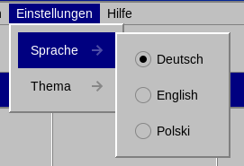
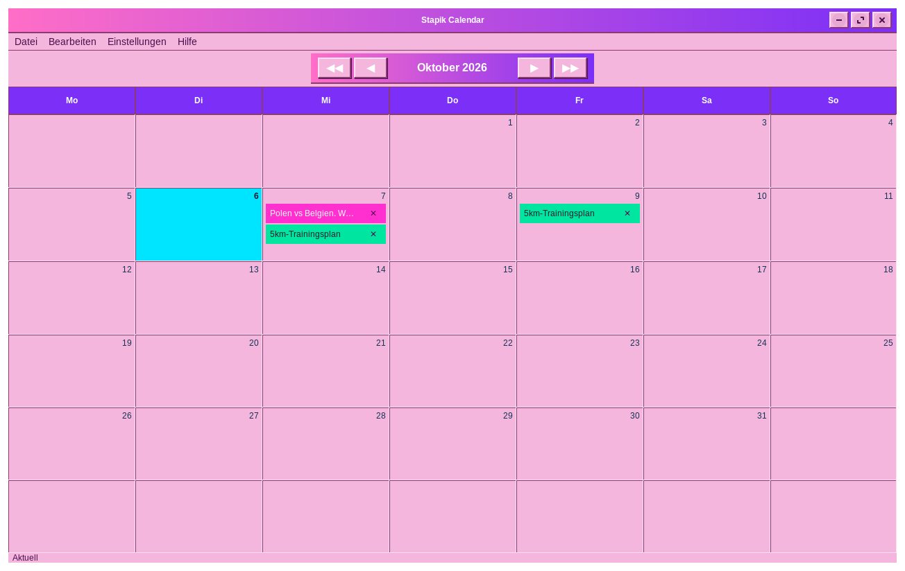
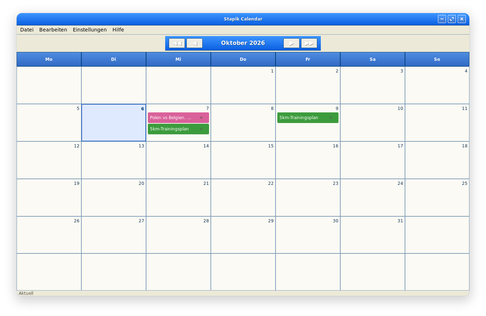
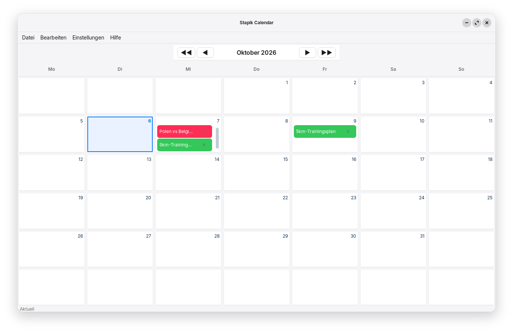
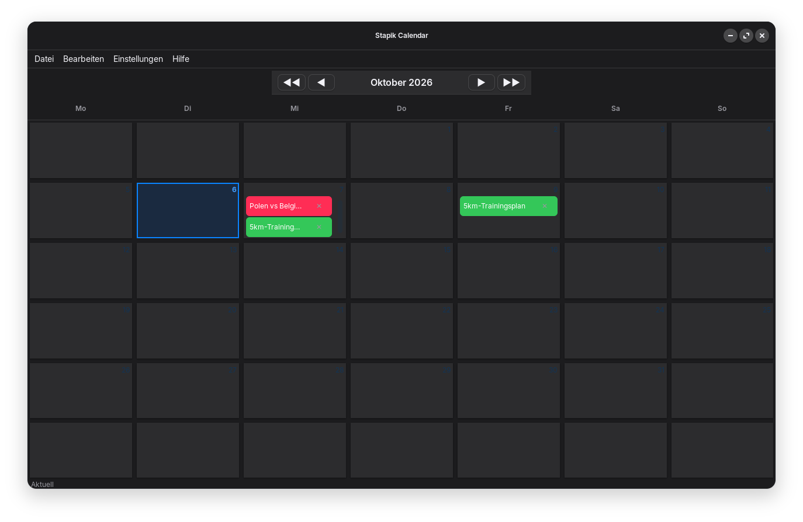
9. Synchronisierung mit Stapik Cloud
Stapik Cloud ist ein Server, den Sie selbst betreiben. Er hält eine Kopie Ihres Kalenders vor, sodass alle Ihre Computer dieselben Einträge zeigen. Die Cloud ist optional — ohne sie arbeitet der Kalender einfach auf einem Computer.
9.1 Was Sie brauchen
- Einen laufenden Stapik-Cloud-Server, den Ihr Computer erreichen kann, und dessen Adresse (die API-URL), zum Beispiel
https://cloud.example.com. - Einen für dieses Gerät ausgestellten API-Schlüssel. Im Admin-Panel von Stapik Cloud erhält jedes Gerät einen eigenen Schlüssel; es gibt keinen gemeinsamen Schlüssel.
Der Kalender wird auf dem Server im Dokument mit dem Namen calendar.json gespeichert.
9.2 Verbinden
- Wählen Sie Datei → Mit Cloud verbinden.
- Geben Sie die API-URL ein. Sie muss mit
http://oderhttps://beginnen. - Geben Sie den API-Schlüssel ein. Setzen Sie ein Häkchen bei Schlüssel anzeigen, wenn Sie prüfen möchten, was Sie eingegeben haben.
- Klicken Sie auf Verbinden.
- Nach einem Moment meldet eine Nachricht, ob die Verbindung funktioniert hat (Verbunden) oder nicht (Verbindung fehlgeschlagen, mit dem Grund).
http://, warnt das Fenster, dass die Verbindung nicht sicher ist: Schlüssel und Kalender werden unverschlüsselt gesendet. Verwenden Sie https://, wenn der Server über das Internet erreichbar ist.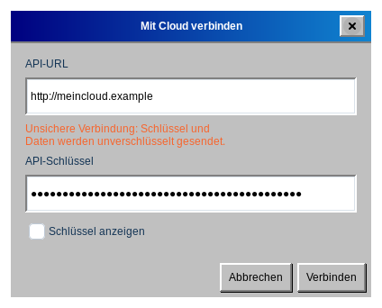
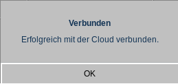
Die Einstellungen werden gespeichert. Beim nächsten Start verbindet sich die Anwendung selbst, und das Fenster, das Sie über Mit Cloud verbinden öffnen, ist bereits ausgefüllt, sodass Sie damit Server oder Schlüssel ändern können.
Was bei der ersten Synchronisierung geschieht: Ist die Cloud noch leer, wird Ihr Kalender hochgeladen. Ist die Kopie in der Cloud neuer als Ihre, ersetzt sie Ihren lokalen Kalender. Andernfalls wird Ihr lokaler Kalender hochgeladen.
9.3 Die Statusleiste
Ist eine Cloud eingerichtet, zeigt der untere Fensterrand den aktuellen Zustand:
| Status | Bedeutung |
|---|---|
| Aktuell | Ihr Kalender und die Cloud sind identisch. |
| Synchronisiere… | Eine Synchronisierung läuft. |
| Offline | Der Server ist nicht erreichbar. Ihre Änderungen sind auf diesem Computer sicher, und die Anwendung versucht es selbstständig erneut (zuerst nach 2 Sekunden, dann immer seltener, höchstens alle 5 Minuten). |
| Konflikt: Serverversion beibehalten | In der Cloud lag eine neuere Version, die Ihre lokale ersetzt hat (siehe Konflikte). |
| Synchronisierungsfehler | Die Synchronisierung ist aus einem anderen Grund fehlgeschlagen, zum Beispiel weil der Server die Anfrage abgelehnt hat. Lokale Daten bleiben unberührt. |
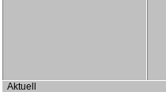
9.4 So funktioniert die Synchronisierung
- Jede Änderung wird sofort auf Ihrem Computer gespeichert.
- Das Senden an die Cloud geschieht im Hintergrund, etwa 1,5 Sekunden nach Ihrer letzten Änderung, sodass das Fenster nie einfriert. Mehrere schnelle Änderungen werden zusammen gesendet.
- Beim Schließen der Anwendung wird jede noch nicht gesendete Änderung zuerst gesendet.
- Datei → Synchronisieren synchronisiert sofort.
9.5 Konflikte und mehrere Geräte
Der gesamte Kalender wird als ein Dokument verglichen, und die neuere Version gewinnt. Einträge werden nie einzeln zusammengeführt. Ändern Sie den Kalender auf zwei Computern, während beide offline sind, ersetzt die Version, die später den Server erreicht, die andere.
Gewinnt die Serverversion, ersetzt sie den Kalender auf Ihrem Computer, und der Rückgängig-Verlauf wird geleert. Standardmäßig bewahrt Stapik Cloud die ersetzte Version im Dokumentverlauf auf, sodass sie im Admin-Panel wiederhergestellt werden kann; stellen Sie sie dort wieder her und synchronisieren Sie erneut.
9.6 Server wechseln oder Synchronisierung beenden
Um einen anderen Server oder Schlüssel zu verwenden, öffnen Sie Datei → Mit Cloud verbinden erneut und geben Sie die neuen Werte ein. Es gibt keine Schaltfläche zum Trennen: Um die Cloud nicht mehr zu nutzen, schließen Sie die Anwendung und löschen Sie die Datei ~/.local/share/stapikcalendar/config.json. Ihr lokaler Kalender bleibt unberührt.
Der API-Schlüssel steht in dieser Datei im Klartext und ist nur für Sie lesbar; schützen Sie daher Ihr Home-Verzeichnis.
10. Ihre Daten und Sicherungen
Der Kalender liegt in Ihrem Home-Verzeichnis unter ~/.local/share/stapikcalendar/:
| Datei | Inhalt |
|---|---|
calendar.json | Ihr Kalender |
calendar.json.bak, .bak.2, .bak.3 | die drei vorherigen Versionen, bei jedem Speichern aufgefrischt |
config.json | Cloud-Adresse und Schlüssel |
cloud-baseline.json | technische Daten zur letzten Synchronisierung |
Sprache und Thema werden in ~/.config/stapikcalendar/settings.json gespeichert.
Eine Sicherung wiederherstellen
- Schließen Sie die Anwendung.
- Kopieren Sie
calendar.json.bak(oder.bak.2,.bak.3) übercalendar.json. - Starten Sie die Anwendung erneut.
Den Kalender auf einen anderen Computer übertragen
Kopieren Sie calendar.json in denselben Ordner auf dem anderen Computer. Mit Stapik Cloud können Sie stattdessen den neuen Computer mit demselben Server verbinden, und der Kalender wird automatisch geladen.
11. Update von Version 1.1.x
- Beim ersten Start von Version 1.2.0 wird Ihr Kalender automatisch in das neue Format umgewandelt. Die alte Datei bleibt als
calendar.json.bakerhalten. - Auch das in der Cloud gespeicherte Format hat sich geändert. Aktualisieren Sie alle Geräte, bevor Sie sie erneut mit derselben Cloud verbinden: Ein Gerät mit 1.1.x kann das neue Format nicht lesen und könnte Ihren Kalender überschreiben.
- Ein von Version 1.1.x in die Cloud geschriebener Kalender wird korrekt gelesen und bei der nächsten Synchronisierung durch das neue Format ersetzt.
- Wenn Sie eine Version mit einem einzigen gemeinsamen API-Schlüssel verwendet haben, verbinden Sie sich erneut mit einem für dieses Gerät ausgestellten Schlüssel (Datei → Mit Cloud verbinden).
12. Problemlösung
- Ein Klick auf einen Eintrag öffnet keine Seite.
- Prüfen Sie, ob der Eintrag einen Link hat. Es werden nur
http- undhttps-Links geöffnet, und Ihr System braucht einen Standard-Webbrowser. - Ein Doppelklick öffnet die Seite statt des Editors.
- Klicken Sie etwas schneller oder verlängern Sie die Doppelklickzeit in den Mauseinstellungen Ihres Systems.
- Ein Rechtsklick auf einen Tag bewirkt nichts.
- Die Zwischenablage muss eine vollständige Webadresse enthalten, die mit
http://oderhttps://beginnt. - Der Status ist „Offline“.
- Prüfen Sie Ihre Internetverbindung und die Serveradresse (Datei → Mit Cloud verbinden). Die Anwendung versucht es selbstständig erneut, und Datei → Synchronisieren versucht es sofort.
- Der Status ist „Synchronisierungsfehler“, oder das Verbinden schlägt fehl.
- Prüfen Sie, ob Adresse und API-Schlüssel stimmen und ob der Schlüssel für dieses Gerät ausgestellt und im Admin-Panel nicht widerrufen wurde.
- Meine Änderungen sind nach einer Synchronisierung verschwunden.
- Sie haben wahrscheinlich Konflikt: Serverversion beibehalten gesehen: Ein anderes Gerät hat eine neuere Version gespeichert. Stellen Sie die ersetzte Version aus dem Dokumentverlauf im Stapik-Cloud-Admin-Panel wieder her (siehe Konflikte) oder spielen Sie eine lokale Sicherung ein (siehe Ihre Daten).
- Die Anwendung startet mit einem leeren Kalender.
- Die Kalenderdatei konnte nicht gelesen werden. Suchen Sie in
~/.local/share/stapikcalendar/nach Dateien mit den Namencalendar.json.corrupt-…odercalendar.json.unreadable-…(eine Kopie der unlesbaren Datei) sowie nach den Sicherungencalendar.json.bak; stellen Sie eine davon wie im Abschnitt Ihre Daten und Sicherungen beschrieben wieder her. - Der Menüeintrag „Anleitung“ öffnet nichts.
- Stellen Sie sicher, dass ein Webbrowser als Standardanwendung für Webseiten festgelegt ist. Meldet die Nachricht, dass die Datei nicht gefunden wurde, ist die Installation unvollständig; installieren Sie die Anwendung neu.
13. Über die Anwendung
Wählen Sie Hilfe → Info, um Version und Autor zu sehen.
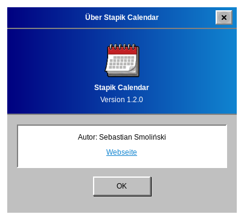
Quellcode und Problemmeldungen: github.com/Stapik-Group/stapik-calendar. Der Synchronisierungsserver: github.com/Stapik-Group/stapik-cloud.